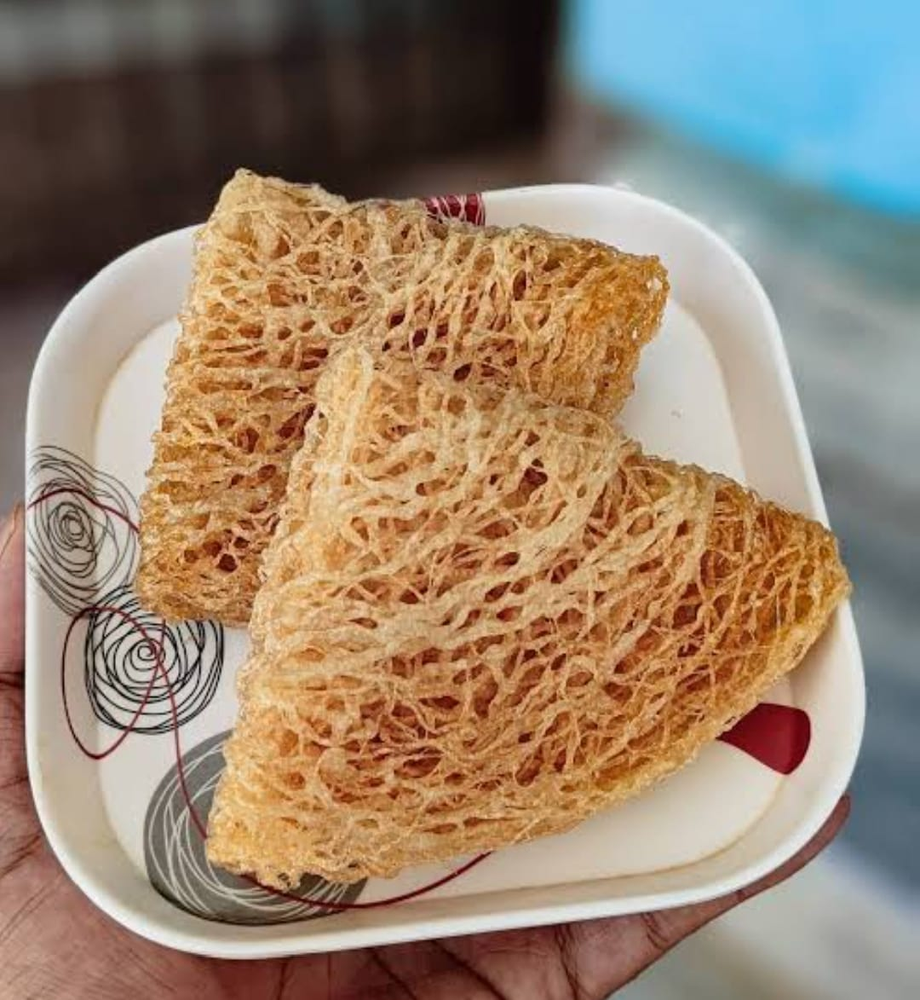
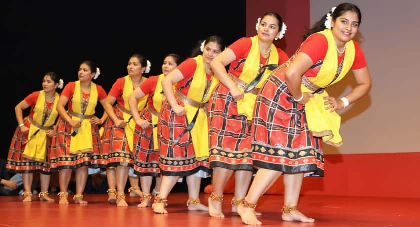

History
ସମ୍ବଲପୁର ଏକ ଐତିହାସିକ ସହର ଯାହା ପୂର୍ବେ ଏକ ଗୁରୁତ୍ୱପୂର୍ଣ୍ଣ ଦେଶୀୟ ରାଜ୍ୟ ଥିଲା।
୧୮୪୯ ମସିହାରେ ଶେଷ ଚୌହାଣ ରାଜା ରାଜା ନାରାୟଣ ସିଂହଙ୍କ ଦେହାନ୍ତ ପରେ
ସମ୍ବଲପୁର ଆଧିକାରିକ ଭାବେ ବ୍ରିଟିଶ ଶାସନ ଅଧୀନରେ ଆସିଥିଲା।
ରାଜାଙ୍କ ଦେହାନ୍ତ ସହିତ ସମ୍ବଲପୁରର ଲୋକମାନଙ୍କ ଜୀବନରେ
ଏକ ନୂତନ ଅଧ୍ୟାୟ ଆରମ୍ଭ ହେଲା। ସେପର୍ଯ୍ୟନ୍ତ ସମ୍ବଲପୁରର
ଲୋକମାନେ ଦେଶର ଚଳିଥିବା ରାଜନୈତିକ ଅସ୍ଥିରତାରୁ
ଦୂରେ ରହିଥିଲେ।
ବ୍ରିଟିଶ ଶାସନକାଳୀନ ସମୟରେ ଅନେକ ପ୍ରଶାସନିକ ପରିବର୍ତ୍ତନ
ଆଣାଯାଇଥିଲା। ୧୮୬୦ ମସିହାରେ ସମ୍ବଲପୁରକୁ
ବଙ୍ଗ ପ୍ରାନ୍ତରେ ସମିଲିତ କରାଯାଇଥିଲା ଏବଂ ପରେ
କେନ୍ଦ୍ରୀୟ ପ୍ରାନ୍ତର ଅଂଶ କରାଯାଇଥିଲା।
ଜନସାଧାରଣଙ୍କ ଆନ୍ଦୋଳନ ଓ ତଦନ୍ତ ପରେ
୧୯୦୫ ମସିହାରେ ପୁଣିଥରେ ବଙ୍ଗ ପ୍ରାନ୍ତରେ
ସମିଲିତ କରାଗଲା।
ଶେଷରେ ୧୯୧୨ ମସିହାରେ ଓଡ଼ିଶା ପ୍ରାନ୍ତ ଗଠିତ ହେବା ପରେ
ସମ୍ବଲପୁର ଓଡ଼ିଶାର ଏକ ଅଂଗ ହେଲା।
ଐତିହାସିକ ଗୌରବ ସହିତ ସମ୍ବଲପୁର
ତାହାର ସାଂସ୍କୃତିକ ଐତିହ୍ୟ ପାଇଁ ମଧ୍ୟ ପ୍ରସିଦ୍ଧ।
ବିଶ୍ୱବିଖ୍ୟାତ ସମ୍ବଲପୁରୀ ଶାଢ଼ୀ,
ସମ୍ବଲପୁରୀ ଲୋକଗୀତ ଓ ନୃତ୍ୟ
ଏଠାର ସ୍ୱତନ୍ତ୍ର ପରିଚୟ।
Cuisine & Traditions (ଖାଦ୍ୟ ଏବଂ ପରମ୍ପରା)

Sital Shasthi(ସୀତଳ ଷଷ୍ଠୀ)
ସୀତଳ ଷଷ୍ଠୀ ସମ୍ବଲପୁରର ସବୁଠାରୁ ଲୋକପ୍ରିୟ ପର୍ବମାନଙ୍କ ମଧ୍ୟରୁ ଗୋଟିଏ।
ଏହି ପର୍ବରେ ଭଗବାନ ଶିବ ଓ ମା ପାର୍ବତୀଙ୍କ ବିବାହ
ରାଜସି ଆଡ଼ମ୍ବରରେ ପାଳିତ ହୁଏ।
ଏହା ସମ୍ବଲପୁରର ସାଂସ୍କୃତିକ ଗରିମାର ପ୍ରତୀକ।

NUAKHAI(ନୂଆଖାଇ)
ନୂଆଖାଇ ପଶ୍ଚିମ ଓଡ଼ିଶାର ସବୁଠାରୁ ପ୍ରମୁଖ କୃଷି ପର୍ବ।
ଏହି ଦିନ ଲୋକମାନେ ନୂଆ ଧାନର ଭୋଗ ଦେଇ
ମା ସମଳେଶ୍ୱରୀଙ୍କୁ ପୂଜା କରନ୍ତି।
ପରିବାରିକ ମିଳନ ଓ ଏକତା ଏହି ପର୍ବର ମୂଳ ଆତ୍ମା।

The Iconic Sarsatia (ସରସତିଆ)
ସମ୍ବଲପୁରର ସବୁଠାରୁ ପ୍ରସିଦ୍ଧ ଖାଦ୍ୟ ହେଉଛି "ସରସତିଆ"। ଏହା ଏକ ବିରଳ ମିଠା ଯାହା କେବଳ ଏକ ବିଶେଷ ଗଛ (ଗାମୀ ଗଛ) ର ଡାଳର ରସରୁ ପ୍ରସ୍ତୁତ କରାଯାଏ। ଏହାର କୁଡୁକୁଡିଆ ସ୍ୱାଦ ସମ୍ବଲପୁରର ଅସଲ ପରିଚୟ।

Sambalpuri Handloom (ସମ୍ବଲପୁରୀ ହସ୍ତତନ୍ତ)
ସମ୍ବଲପୁରୀ ହସ୍ତତନ୍ତ ସାରା ଦେଶ ଓ ବିଦେଶରେ ପ୍ରସିଦ୍ଧ।
ଏହି ସାଡ଼ି ଓ ବସ୍ତ୍ରଗୁଡ଼ିକ ଇକତ ପଦ୍ଧତିରେ ତିଆରି ହୋଇଥାଏ
ଏବଂ ପରମ୍ପରା, କଳା ଓ ଶ୍ରମର ସୁନ୍ଦର ସମ୍ମିଶ୍ରଣ ଅଟେ।
ଏହା ସମ୍ବଲପୁରର ଗର୍ବ ଓ ପରିଚୟ।

The Famous Dalkhai Dance (ଡାଲଖାଇ)
ଡାଲଖାଇ ହେଉଛି ପଶ୍ଚିମ ଓଡ଼ିଶାର ସବୁଠାରୁ ପ୍ରସିଦ୍ଧ ଲୋକନୃତ୍ୟ।
ଏହା ବିଶେଷକରି ନୂଆଖାଇ ପର୍ବ ସମୟରେ ଯୁବତୀମାନଙ୍କ ଦ୍ୱାରା
ଢୋଲ, ନିସାନ ଓ ମହୁରୀର ତାଳରେ ପ୍ରଦର୍ଶିତ ହୁଏ।
ଏହି ନୃତ୍ୟ ସମ୍ବଲପୁରର ସାଂସ୍କୃତିକ ଗରିମାକୁ ପ୍ରତିବିମ୍ବିତ କରେ।